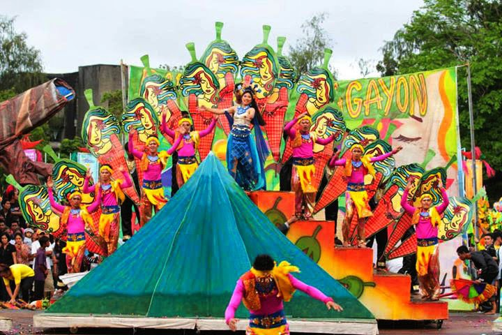
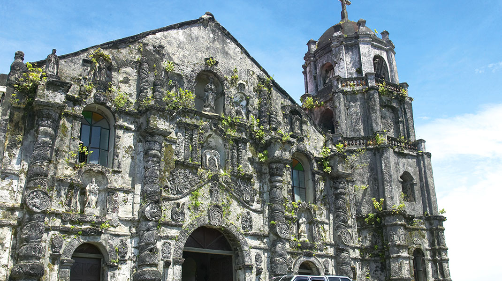

WELCOME TO
BICOL
Bicol, a region in the Philippines, enchants with its breath taking beauty and rich culture. Its lush landscapes, majestic volcano, and pristine beaches are a feast for the eyes. Bicol is an embodiment of the spirit of exploration, fostering a connection with nature and the warmth of its people. Bicol is a reminder that life's most profound experiences are obtained beyond our comfort zones, and inspires us to depart for unforgettable adventures!
Bicol's physical geography and natural heritage is a testament to the breathtaking diverse beauty of the Philippines, offering something for every nature enthusiast. Located in the southeastern part of Luzon, Bicol boasts lush, verdant forests, stunning landscapes and unique biodiversity. Its crown jewel, the Mayon Volcano, is renowned for its near-perfect cone shape, often shrouded in myths and legends.
Bicol's coastline, with its pristine beaches and marine sanctuaries, is a testament to its marine biodiversity. The region's verdant countryside, adorned with terraced rice paddies, presents a harmonious fusion of nature and culture, while its hot springs, like those in Camarines Sur, offers therapeutic experiences rooted in geothermal wonders. These attractions are not just for the eyes to enjoy, but your body and spirit as well as you'll also find activities from rock climbing to snorkeling! These wonders allures travelers seeking adventure, tranquility, and deep connection with nature.
scroll down to see more of bicol's beauty
![Are you an adventure seeker? If so, then the Caramoan Islands is your paradise! It offers tons of fun and activities such as island-hopping, rock climbing, snorkeling, and trekking, making it a playground for adventure seekers like you! Get engrossed with their untouched, rugged beauty, offering a journey that ignites your spirit of adventure. These islands, hidden gems in Bicol, promise an escape to a world of pristine beaches, towering limestone cliffs, and crystal-clear waters. Forge connections with both the land and the sea. Visiting Caramoan is a chance to unleash your inner explorer and savor the thrill of discovery, leaving you with unforgettable memories and a renewed sense of wonder. Caramoan is invitating you to embark on a thrilling exploration!](src/image/caramoan.jpeg)
![If you think it's just ruins, you're gravely mistaken. It's a glimpse into history's resilience and a testament to nature's power. The iconic Cagsawa Ruins, with Mayon Volcano as a dramatic backdrop, tell a story of endurance and rebirth. Visiting this site is a chance to reflect on the strength of the human spirit in the face of adversity and to appreciate the enduring beauty of our world. It's a motivation to embrace life's challenges, knowing that, like the Cagsawa Ruins, we too can rise from the ashes and rebuild.](src/image/cagsawa-ruins.jpg)
![The powdery sands, pristine shores, turquoise waters, swaying palm trees, vibrant coral gardens, and clear skies, they're all calling you to step into a tropical paradise! It's not just a destination; it's a glimpse to the virgin beauty. The island's unspoiled beaches, swaying palm trees, and clear skies paint a picture of serenity and adventure. In Calaguas, you'll rediscover the pure joy of exploration, whether it's lounging on the powdery sands or snorkeling in the vibrant coral gardens. A trip to Calaguas is a chance to escape from the suffocating cities and immerse yourself in the exquisite simplicity of island life.](src/image/calaguas.jpg)
![If you love crystal-clear waters, lush landscapes, and the warm hospitality of the locals create an atmosphere of wonder and serenity. Then Donsol is a MUST. This well-preserved paradise is also renowned for its breathtaking whale shark encounters, where you can witness these gentle giants up close! Donsol is more than just a spectacle; it's also an opportunity to reconnect with the awe-inspiring power of the natural world. In Donsol, you're not just a traveler; you become a steward of the Earth, reminded of the beauty of our oceans. It's a place to revitalize your love for nature and your commitment to its preservation!](src/image/donsol.jpg)
![Fun fact: The Mayon Volcano's 'Mayon' is derived from the word 'magayon,' which means 'beautiful' or 'pretty' in Bikolano. This name is fitting for the volcano, as Mayon is renowned for its stunning symmetrical cone shape and breathtaking beauty. So, the name 'Mayon' essentially means 'The Beautiful One' or 'The Pretty One,' which is a reflection of its stunning appearance.
Visiting Mayon Volcano is not just a must, it's essential! Mayon is not just visually stunning but a profound connection to nature's dynamic forces. Its perfectly symmetrical cone, lush and pristine slopes, and ever-mesmerizing tapestry of color against the sky. Beyond beauty, it's a cultural cornerstone, a living narrative of Bicol's history. Mayon also has a rich history and folklore, adding an extra layer of fascination, making it a destination that's as culturally impressive as it is visually stunning.](src/image/mayon-2.jpg)
Bicol's Cultural Heritage
Bicol's cultural heritage is a blend of indigenous practices, Spanish colonial influences, and modern adaptations, creating a unique and vibrant tapestry. It reflects the region's deep-rooted sense of identity and pride in its history and traditions, making it a captivating and culturally diverse part of the Philippines. Here are some of Bicol's cultural heritage:
- Language/Literature (Intangible culture): The Bicolanos predominantly speak the Bikol language, which has various dialects across the region. Bicol is known for its literary contributions, with the "Ibalong" epic being one of its most famous oral traditions.
- Religious Festivals & Traditions (Intangible culture): Bicol is known for its vibrant religious festivals, and the Penafrancia Festival in Naga City is one of the region's most significant celebrations. This annual event honors the Our Lady of Penafrancia and involves colorful processions, traditional dances, and cultural showcases. 
- Music and Dance (Intangible culture): Bicolano music and dance are essential components of its cultural heritage. The "Pantomina" and "Sarung Banggi" are two popular traditional dances performed during various occasions.
- Arts and Crafts (Tangible): Bicol's artistic traditions are expressed through various forms, including wood carving, pottery, and weaving. The region's craftsmanship is particularly evident in the creation of abaca and other woven products.
- Architecture (Tangible culture): The churches and ancestral houses in Bicol reflect the Spanish colonial influence on the region's architecture. The Cagsawa Ruins, a testament to the destructive power of Mayon Volcano, is a notable example of Bicol's tangible cultural heritage. 
- Delicacies (Tangible): Then of course, food. Bicol is renowned for its unique and spicy cuisine. Dishes like "Bicol Express," made with chili peppers and coconut milk, and "Laing," a taro leaf dish, are staples of the region. These dishes reflect Bicol's culinary distinctiveness.
--------
Whether you're an environmentalist, adventure seeker, travel enthusiast, or you're just an ordinary person needing a break from the suffocating, pollutated, and the stressful city life, it doesn't matter because BICOL is for EVERYONE! Nature misses you, and you need nature, meet with nature at Bicol!